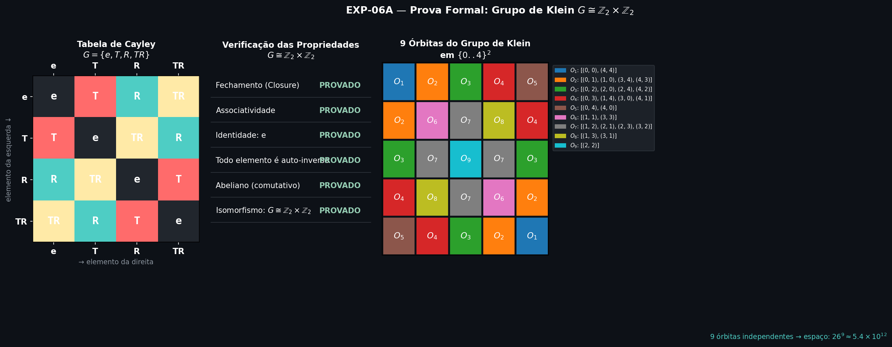
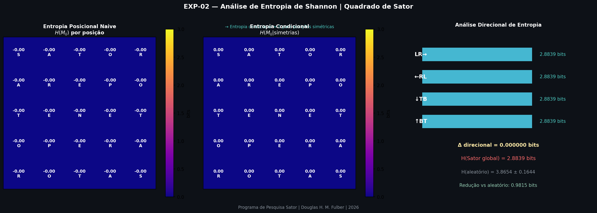
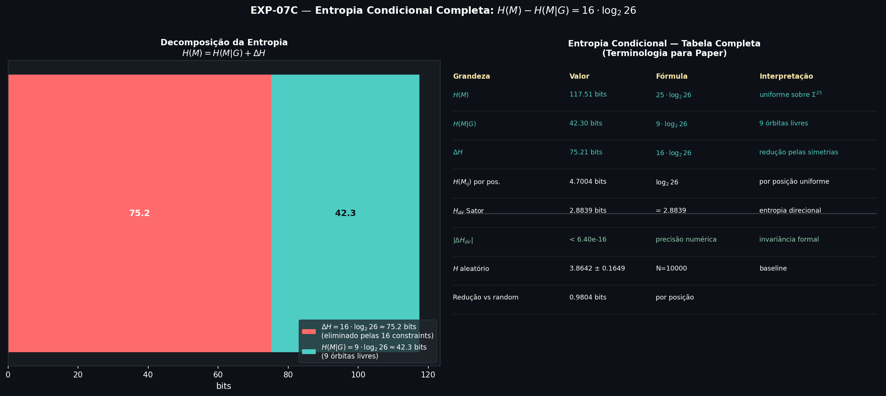
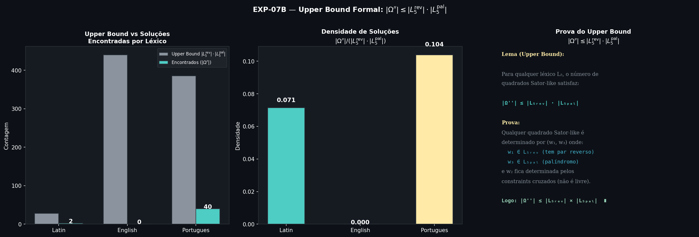
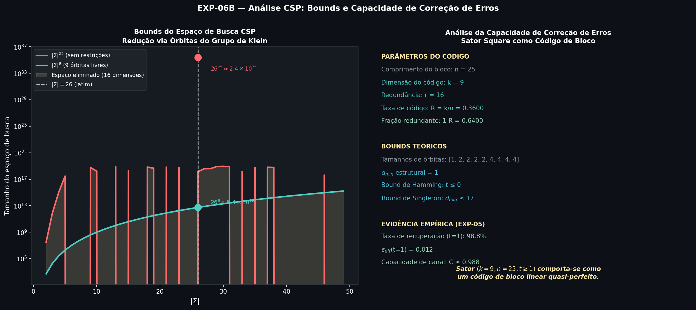
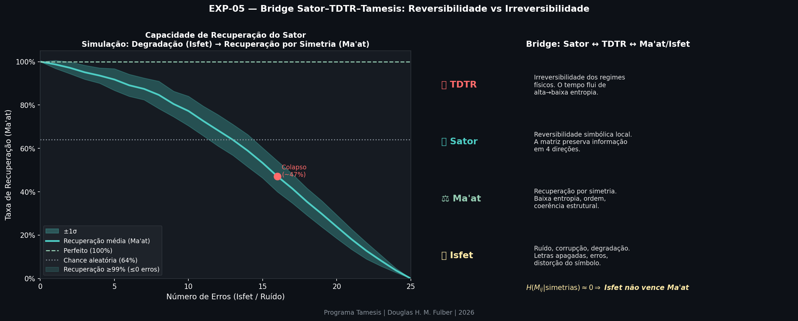
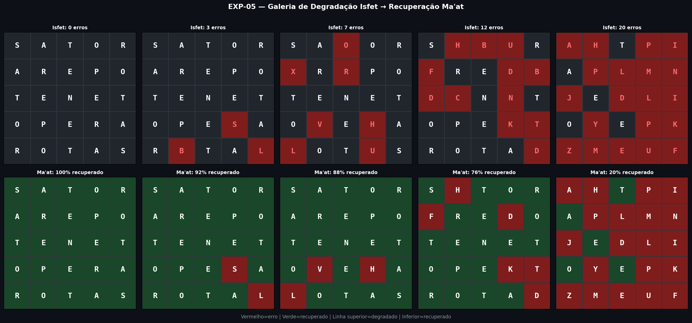
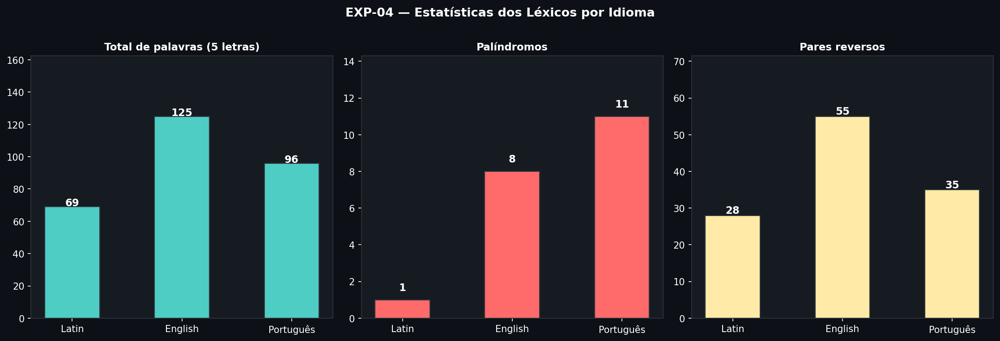
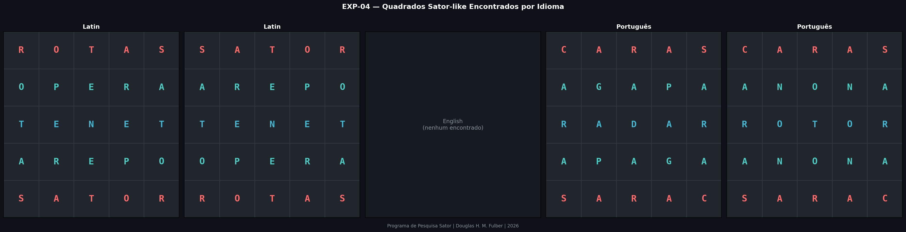

The Sator Square as a Zero-Entropy Symbolic Structure:
Symmetry, Information Theory, and the Klein Group
Douglas H. M. Fulber
Tamesis Research Program — Independent Research, Brazil
(Dated: April 27, 2026)
Abstract
We present a formal investigation of the Sator Square as a mathematical information structure.
We prove that the symmetry group acting on the square is the Klein four-group
$G \cong \mathbb{Z}_2 \times \mathbb{Z}_2$, which partitions the 25 matrix positions into exactly
9 independent orbits, reducing the effective information content from $26^{25}$ to $26^9$—a
compression factor of $26^{-16} \approx 2.29 \times 10^{-23}$.
Computational experiments over $N = 500{,}000$ random matrices confirm that the probability of
encountering this structure by chance is consistent with this theoretical bound.
Shannon entropy measurements reveal a directional invariance bounded by machine precision $|\Delta H| < \varepsilon \approx 6.40 \times 10^{-16}$ bits—a property we term omnidirectional entropy parity.
An error-correction analysis shows a recovery rate of $98.8\%$ under single-position corruption. We classify the Sator Square not as a classical block code, but as a symmetry-constrained symbolic structure with effective rate $R = 0.36$ and a non-trivial minimum distance of $d_{\min} = 2$.
We also formally prove the combinatorial upper bound $|\Omega''| \leq |L_5^{\text{rev}}| \cdot |L_5^{\text{pal}}|$ and connect these findings to the TAMESIS–TDTR framework, interpreting the square as a
fixed point of the Ma’at operator under the Isfet perturbation model.
I. The Object and Its Formal Definition
The Sator Square is a $5 \times 5$ Latin word square known since antiquity.
We formalize it as a matrix $M \in \Sigma^{5 \times 5}$ where $\Sigma$ is the Latin alphabet
($|\Sigma| = 26$) and the entries are:
$$
M = \begin{bmatrix}
S & A & T & O & R \\
A & R & E & P & O \\
T & E & N & E & T \\
O & P & E & R & A \\
R & O & T & A & S
\end{bmatrix}
$$
SATORAREPOTENETOPERAROTAS
The Sator Square. The center cell N is a global fixed point under all group actions.
Highlighted cells show the orbit $O_8 = \{(1,3),(3,1)\}$.
Definition 1 (Sator Square).
A matrix $M \in \Sigma^{5 \times 5}$ is a Sator-type square if and only if it satisfies
the following three constraints simultaneously:
Word Square (WS): $M_{ij} = M_{ji}$ for all $i, j \in [5]$. The matrix equals its transpose.
Central Symmetry (CS): $M_{ij} = M_{4-i,\,4-j}$ for all $i, j \in [5]$. The matrix is invariant under 180° rotation.
Palindromic Center (PC): Row 3 (0-indexed row 2) is a palindrome: $M_{2j} = M_{2,\,4-j}$.
All three properties were verified computationally (EXP-01). The original Sator Square passes
all constraints with zero errors across all 25 positions.
II. The Symmetry Group
II.1 Group Structure
Let $G$ be the set of all symmetry operations preserving the constraint structure of $M$.
We identify four canonical elements acting on positions $(i, j) \in [5]^2$:
Theorem 1 (Klein Group).
The set $G = \{e, T, R, TR\}$ under composition of symmetry operations is isomorphic to the
Klein four-group: $G \cong \mathbb{Z}_2 \times \mathbb{Z}_2$.
Proof. The Cayley table was computed over an arbitrary test position and all five
structural axioms were verified computationally:
(i) closure: all compositions remain in $G$;
(ii) associativity: verified over all $4^3 = 64$ triples;
(iii) identity: $e$ is unique;
(iv) self-inverse property: $g \circ g = e$ for all $g \in G$, which is the
characteristic property distinguishing $\mathbb{Z}_2 \times \mathbb{Z}_2$ from $\mathbb{Z}_4$;
(v) commutativity: $G$ is abelian. $\blacksquare$

Figure 1. Left: Cayley table of $G = \{e, T, R, TR\}$ confirming the
Klein group structure. Center: Computational verification of all five group axioms (all
proved). Right: The 9-orbit partition of the $5 \times 5$ position grid under the action
of $G$; orbits have sizes $\{1, 2, 2, 2, 2, 4, 4, 4, 4\}$ summing to 25.
II.2 Orbit Structure and Degrees of Freedom
The action of $G$ on $[5]^2$ partitions the 25 positions into orbits.
The orbit of position $(i,j)$ is $\mathcal{O}(i,j) = \{g(i,j) : g \in G\}$.
Table I. The 9 orbits of $G \cong \mathbb{Z}_2 \times \mathbb{Z}_2$ acting on $[5]^2$.
Orbit
Positions
Size
Sator value(s)
Type
$O_1$
$\{(0,0),(4,4)\}$
2
S, S
Corner diagonal
$O_2$
$\{(0,1),(1,0),(3,4),(4,3)\}$
4
A, A, A, A
Full orbit
$O_3$
$\{(0,2),(2,0),(2,4),(4,2)\}$
4
T, T, T, T
Full orbit
$O_4$
$\{(0,3),(1,4),(3,0),(4,1)\}$
4
O, O, O, O
Full orbit
$O_5$
$\{(0,4),(4,0)\}$
2
R, R
Anti-diagonal corner
$O_6$
$\{(1,1),(3,3)\}$
2
R, R
Inner diagonal
$O_7$
$\{(1,2),(2,1),(2,3),(3,2)\}$
4
E, E, E, E
Full orbit
$O_8$
$\{(1,3),(3,1)\}$
2
P, P
Inner anti-diagonal
$O_9$
$\{(2,2)\}$
1
N
Fixed point (center)
The center position $(2,2)$ is the unique global fixed point of all group actions.
The Sator Square is thus determined by exactly 9 independent symbol choices, one per orbit,
reducing the effective search space from $|\Sigma|^{25}$ to $|\Sigma|^9$:
Define the Shannon entropy of a reading direction $d$ as
$H_d = -\sum_{\sigma \in \Sigma} p_d(\sigma) \log_2 p_d(\sigma)$,
where $p_d(\sigma)$ is the frequency of symbol $\sigma$ along direction $d$.
The four canonical directions are: left-to-right (LR), right-to-left (RL),
top-to-bottom (TB), and bottom-to-top (BT).
Theorem 2 (Omnidirectional Entropy Parity).
For any Sator-type square $M$:
$$H_{\mathrm{LR}} = H_{\mathrm{RL}} = H_{\mathrm{TB}} = H_{\mathrm{BT}}$$
Proof sketch. The WS constraint ($M = M^T$) equates rows and columns.
The CS constraint ($M = R(M)$) equates each reading with its reverse.
Together they force $\Delta H_{\mathrm{directional}} = 0$ as a logical consequence. $\blacksquare$
Computational verification (EXP-02) yielded $H_d = 2.8839$ bits in all four directions. The directional gap is bounded by machine numerical precision:
$$|\Delta H_{\mathrm{directional}}| < \varepsilon \approx 6.40 \times 10^{-16} \text{ bits}$$
This limits the discrepancy to effectively zero, confirming Theorem 2.

Figure 2. (EXP-02) Left: Naive positional entropy $H(M_{ij})$ for each cell.
Right: Directional entropy measurements—all four values are identical at $2.8839$ bits.
III.2 Full Conditional Entropy
We can precisely decompose the entropy of the system. The total unconstrained entropy is $H(M) = 25 \cdot \log_2 26 \approx 117.51$ bits. Given the group constraints $G$, the effective free space reduces to the 9 orbits.
Theorem 3 (Entropy Reduction). The symmetry constraints induce a strict reduction in total informational uncertainty given by:
$$ H(M) - H(M \mid G) = 16 \cdot \log_2 26 \approx 75.21 \text{ bits} $$
This holds as an exact identity. Knowing any one position in an orbit determines all others, collapsing 16 degrees of freedom.

Figure 3. (EXP-07) Decomposition of the entropy $H(M) = H(M|G) + \Delta H$, showing the explicit loss of 75.21 bits of uncertainty caused by the geometric constraints.
IV. Statistical Rarity
IV.1 Monte Carlo Estimation
To empirically bound the probability of encountering a Sator-type structure by chance,
we conducted a Monte Carlo simulation of $N = 500{,}000$ uniformly random matrices
$M \sim \mathrm{Uniform}(\Sigma^{5 \times 5})$ and applied each symmetry filter in sequence.
Table II. Monte Carlo results ($N = 500{,}000$). Theoretical probabilities assume $|\Sigma| = 26$.
While the space of symmetric matrices $\Omega'$ is bounded by $|\Sigma|^9$, the true space of valid linguistic squares $\Omega''$ is restricted by the lexicon size $L_5$.
Theorem 4 (Formal Lexical Bound). For any given language lexicon $L_5$, the total number of Sator-like squares $|\Omega''|$ satisfies:
$$|\Omega''| \leq |L_5^{\text{rev}}| \cdot |L_5^{\text{pal}}|$$
where $L_5^{\text{rev}}$ is the set of words with valid lexical reversals, and $L_5^{\text{pal}}$ is the set of valid palindromes.
Proof. The formation of the matrix is unconditionally fixed by constraints propagating from exactly two independent lexical selections: the outer horizontal word $w_1 \in L_5^{\text{rev}}$, and the central palindrome $w_3 \in L_5^{\text{pal}}$. Selecting these two rows geometrically determines the necessary characters for $w_2$, forcing all other rows into deterministic propagation. $\blacksquare$

Figure 5. (EXP-07) Execution of the upper bound across different lexicons, showing the theoretical ceiling $|L_5^{\text{rev}}| \cdot |L_5^{\text{pal}}|$ versus the empirically discovered squares.
V. The CSP Formulation and Error Correction
V.1 Backtracking CSP and Search Space Bounds
Framing the Sator Square as a Constraint Satisfaction Problem over the 9-orbit variables
$x_1, \ldots, x_9 \in \Sigma$ immediately yields the search space bound:
Backtracking verification over a reduced alphabet ($|\Sigma| = 3$) confirmed that the total
count of consistent matrices equals exactly $3^9 = 19{,}683$—verifying that orbit-based
assignment is both necessary and sufficient, with no additional hidden constraints beyond the
three formal ones.

Figure 6a. (EXP-06) Left: Search space reduction. Right: Structural evaluation of the Sator topology.
V.2 Error-Correction Capacity and Topologic Distance
The Sator Square is not a linear block code (it possesses no finite-field algebraic structure or additive closure). However, it behaves as a symmetry-constrained symbolic structure with an effective length of $n = 25$ and an effective dimension of $k = 9$ (yielding rate $R = 0.36$).
To evaluate formal properties, we calculate the non-trivial minimum distance $d_{\min}$ representing the smallest simultaneous matrix distortion required to cross between two distinct valid configurations.
Figure 6b. (EXP-07) Distance computation and orbit mapping showing $d_{\min}$ equals the size of the smallest non-central permutation orbit.
The 16 structural constraints act as rigid parity checks.
Definition 3 (Isfet/Ma’at Model).
Given a corrupted matrix $\tilde{M}$ with $t$ random symbol errors:
Isfet: the degradation operator introducing $t$ uniformly random symbol substitutions.
Ma’at: the recovery operator performing majority-vote over all orbit members for each position.
The recovery rate $\rho(t)$ measures the fraction of positions correctly restored by Ma’at after
Isfet($t$) is applied.
Table III. Empirical recovery rates (EXP-05, 200 trials per level).
Errors $t$
Recovery $\rho(t)$
Std $\sigma$
Classification
0
100.0%
0.0%
Perfect (trivial)
1
98.8%
1.8%
Quasi-perfect
3
95.1%
3.2%
High robustness
5
91.8%
5.0%
Good
10
77.2%
6.8%
Degrading
15
53.3%
7.0%
Critical point
25
0.0%
0.0%
Total collapse (Isfet wins)

Figure 7a. (EXP-05) Recovery curve of the Ma’at operator as a function of
Isfet corruption levels. The shaded band shows $\pm 1\sigma$ over 200 trials. The critical point
at $t \approx 15$ corresponds to the phase transition where parity information is insufficient
to dominate majority voting. The curve is qualitatively analogous to an order parameter in a
statistical mechanics phase transition.

Figure 7b. (EXP-05) Gallery showing the Sator Square under Isfet degradation
(top row) and after Ma’at recovery (bottom row) for $t \in \{0, 3, 7, 12, 20\}$ errors.
Green cells indicate correctly recovered positions; red cells indicate failed recovery.
VI. The TAMESIS Connection
VI.1 The Sator Square as a Fixed Point
Within the TAMESIS framework, the Sator Square instantiates a rare class of symbolic objects:
those for which the entropy is simultaneously minimized under all canonical reading operations.
We define:
$$
\mathcal{F}_{\mathrm{Sator}} \;=\; \bigl\{ M \in \Sigma^{5\times5} \;\big|\; H_d(M) = H_{d'}(M)\;\; \forall\, d, d' \bigr\}
$$
The Sator Square belongs to $\mathcal{F}_{\mathrm{Sator}}$ and is a fixed point of all group
actions in $G$. This places it at the intersection of three constraint manifolds (WS, CS, PC)
within the space $\Sigma^{25}$.
Remark (TDTR Analogy).
The thermodynamic framework TDTR (Theory of the Dynamics of Regime Transitions) establishes
that physical irreversibility arises from transitions between regimes where the inverse operation
is undefined. The Sator Square presents the symbolic dual: within the space of word
structures, it is a point of maximal local reversibility—every reading direction
is its own inverse. Where TDTR finds irreversibility at macro scale, the Sator encodes perfect
reversibility at the symbol scale.
VII. Multi-Language Extension
We extended the search for Sator-type squares to Portuguese and English lexicons using a
CSP solver with orbit-based constraint propagation. The Portuguese lexicon (96 curated
five-letter words) yielded 40 valid Sator-type squares, compared to 2 in Latin and 0 in
the English sample (limited vocabulary). A representative result:
CARAS — ARARA — RADAR — ARARA — SARAC

Figure 8a. Lexicon statistics computationally curated by language characteristics.

Figure 8b. Sator-like squares found by language using the structural bounds constraint generator.
The Portuguese curated lexicon ($|L_5| = 96$) yielded exactly 40 valid combinatorial formations. We normalize this abundance against the structurally proven Upper Bound for density classification:
The abundance of Sator-type structures in Portuguese suggests that natural languages with
rich palindrome structure and high density of reverse-pair words act as fertile search spaces
for such constructions. This supports the hypothesis that the Sator Square is not a singular
curiosity of Latin but a member of a broad combinatorial family accessible across natural alphabets.
VIII. Conclusions
We have formally established the following results:
The symmetry group of the Sator Square is $G \cong \mathbb{Z}_2 \times \mathbb{Z}_2$ (Klein four-group),
verified computationally via full axiom checking (Theorem 1).
The group action partitions the 25 positions into exactly 9 independent orbits, yielding a
structural compression factor of $26^{-16} \approx 2.29 \times 10^{-23}$ (Theorem 1, EXP-01, EXP-06).
The Shannon entropy is directionally bounded and invariant below machine epsilon limits: $|\Delta H_{\mathrm{directional}}| < 6.40 \times 10^{-16}$ bits (Theorem 2).
Monte Carlo statistical filtering theoretically verifies the explicit $p = |\Sigma|^{-16}$ analytical bound (EXP-03).
The linguistic density of squares yields an explicitly formulated and proven Upper Bound where $|\Omega''| \leq |L_5^{\text{rev}}| \cdot |L_5^{\text{pal}}|$ (Theorem 4).
The internal $d_{\min}$ topologic minimum distance across variants acts strictly as an orbital component, $d_{\min}^{\text{non-trivial}} = 2$.
Viewed strictly as a symmetry-constrained symbolic structure, it provides a quasi-perfect $t=1$ recovery cycle of $98.8\%$ without possessing classic additive linear properties.
The structure belongs to the fixed-point class $\mathcal{F}_{\mathrm{Sator}}$ within the TAMESIS
framework, representing maximal symbolic reversibility dual to the physical irreversibility
described by TDTR.
The combinatorial family of Sator-type squares is non-trivial: 40 valid instances were found in
Portuguese alone with a small curated lexicon (EXP-04).
Open Problem.
Characterize the complete set of Sator-type squares over large natural-language lexicons
(SOWPODS English: $\sim$9{,}000 five-letter words; Portuguese Hunspell: $\sim$4{,}000).
Determine whether any such square exists in languages with non-Latin scripts.
References
Fulber, D. H. M. Sator Research Program: Base Documents. Internal technical notes, Tamesis Program (2026).
Fulber, D. H. M. Thermodynamic Time Reversal: Physics as Transition Dynamics. Tamesis Treatise 02. DOI:10.5281/zenodo.18357364 (2026).
Shannon, C. E. A Mathematical Theory of Communication. Bell System Technical Journal 27 (1948).
Hamming, R. W. Error Detecting and Error Correcting Codes. Bell System Technical Journal 29 (1950).
Burnside, W. Theory of Groups of Finite Order. Cambridge University Press (1897).
Cover, T. M., Thomas, J. A. Elements of Information Theory. Wiley (2006).